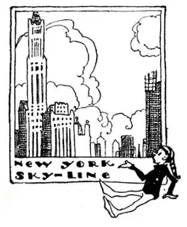
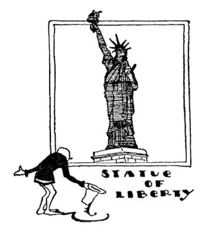
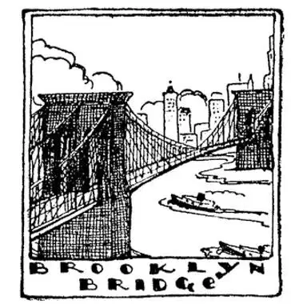
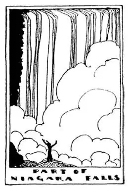

08
The Empire State
帝国州

SEVERAL countries together are called an “Empire.” So New York State is often called the Empire State, because it has as many people, who do as much business and make as much money, as several countries put together.
Down at the corner of New York State is New York City, the second largest city in the World, with more shops, more hotels, more people, and more money than any other city on this side of the World, and with more tall buildings than on any side of the World. It was named after a city across the ocean called York, but New York is now hundreds of times bigger than old York. It is the city of millionaires and millions who are not. People from all over the world come to New York hoping to be millionaires too. Some used to think the streets were paved with gold, and were disappointed when they found them just asphalt.

new york sky-line
纽约的空中轮廓
The main part of New York City is on an island which the Indians called Manhattan. White men bought it from the Indians and paid them about $24 for the whole island—not in money, for the Indians didn’t know what money was, but in beads and ornaments worth $24. A piece of ground only large enough to stand on would now cost many times more than what the whole island once cost. That may seem a big price for a small piece of ground, but a plot of ground is not like a sheet of paper, without thickness. The owner owns everything above and below the ground—down to the center of the earth and up to the sky. That is why men in New York build buildings up to the sky—“sky-scrapers” we call them—for a fifty-story building takes up no more land than a one-story building.
To me there is nothing in the World made by the hand of man more wonderful than New York’s giant buildings. They are marvelous, magnificent, awe-inspiring, stupendous, amazing, overpowering, thrilling, Brobdingnagian. Have you read “Gulliver’s Travels”? Brobdingnag was the land of the giants. They stand unmoved by thunder and lightning, by wind, storm, or tempest, and they look down on their creaters—mites of men who, with their hands of only five fingers, have built them. New York’s motto is “Excelsior,” which means “Higher,” and that is the motto of its builders. There is a saying, “Great oaks from little acorns grow,” and one of the greatest of these buildings—sixty stories high—was built from the nickels and dimes made by Woolworth’s Five and Ten Cent Stores. The most marvelous building of all is called the Empire State Building. It is one hundred and two stories high, taller than any other building in New York City, or in America, or in the whole World.
One group of high buildings in New York might be called the capitol of the World. After World War II most of the countries of the World wanted to find some way of keeping a third World War from happening. These countries each sent men to meet together as our States send men to Congress. At their meetings they discuss matters that are of interest to all the countries of the World. When any country quarrels with another these people try to have them settle their quarrel without fighting. This congress is called the United Nations. The United Nations decided that New York City would be the best place to have its meetings and carry on its business. So there it built its offices. When the buildings were dedicated, or solemnly set apart for United Nations use, the speeches were broadcast in twenty-six different languages.
At a meeting of the United Nations each speaker speaks in his own language, yet he can be understood by all the other people there, for everyone wears earphones and hears a translation of the speech in the language he understands. Of course the people who do the translation must know two languages, for they have to listen in one language and speak into a microphone in another language. What they speak into the microphones is what is heard in the earphones. Millions of other people watch the United Nations meetings on television.

Her nose is four and one half feet long. What a nose for smelling!
她的鼻子有4.5英尺长，这么大的鼻子能闻到多远的气味啊！
On a little island in New York Harbor is a huge bronze statue called the Goddess of Liberty holding aloft a torch-light. Her hand is over sixteen feet long. What a hand to shake! One finger is eight feet long. What a finger for a ring! Her nose is four and one-half feet long. What a nose for smelling! Her mouth is a yard wide. What a mouth for talking! You can climb up on the inside into the Goddess’s head and arm, and a dozen people can stand inside her torch. Ships pass by her, and their passengers crowding the deck greet her with a thrill of “My Country, ’Tis of Thee, Sweet Land of Liberty,” and wave her farewell as they leave for afar, perhaps never to return.
On one side of Manhattan Island is the Hudson River and on the other side is the East River. A bridge was built across the East River by stretching ropes made of steel from one side of the river to the other and hanging the floor of the bridge from these steel ropes. This is called a suspension bridge. It is called the Brooklyn Bridge because at the other end of it on Long Island is another big city called Brooklyn. Brooklyn is now a part of New York City. Such bridges had been built over small streams before, but this was the first big, long bridge built in this way. It is suspended in the air so high above the water that even the greatest ships easily pass beneath it.
At first people were afraid to cross the Brooklyn Bridge, for, said they, “A bridge hung on ropes, even if made of steel, will fall.” It swayed and shook as trucks and cars rumbled over it, and it still does—but still hangs. Several other bridges have been built over the East River and the Hudson River to New York City. Also, tunnels have been dug under the Hudson. The tunnels are called “Tubes” because they are like big tubes under the river.
Two of the most famous streets in the World run the length of Manhattan Island and still farther north. One is named Broadway and the other Fifth Avenue. Broadway was at first only a short street, but it seemed very broad, so they called it that. Broadway, however, is now so long that it might better be called “Longway.” One part of it is lighted so brightly at night by thousands of electric lights and flashing electric signs that it is often called “The Great White Way.” Fifth Avenue is a famous street of once fashionable homes, and many of the finest and most expensive shops are there, so that Fifth Avenue has come to mean Fashion Avenue. The streets of New York are so crowded that most of the people travel from their homes to their work by trains that run in tunnels underground. These underground tunnels are called Subways.

At first people were afraid to cross the Brooklyn Bridge
最初人们都不敢走过布鲁克林大桥
In spite of the fact that land in New York City is worth more than any other land in the World, there are two big parks where city people may have a little country. Central Park is fifty blocks long and several blocks wide, and Bronx Park has a wonderful Zoo where there are strange and curious animals which hunters have brought alive from the jungles, mountains, deserts, and wildernesses of far-off lands.
A man from across the ocean once landed in New York and spent the day seeing the sights. Just before dinner he said he would like to drive out and see Niagara Falls, which he had heard were the most wonderful falls in the World. When he was told that it would take all night on a fast train to get to Niagara, he couldn’t understand.
“But isn’t Niagara in New York?” he asked.
“Yes,” was the reply, “but not in New York City. Niagara is all the way across the State of New York.”

尼亚加拉瀑布局部一览
The roar of the water can be heard for miles
瀑布在悬崖边发出震耳欲聋的轰隆声，几英里外都能听到
On the west edge of New York State are two great lakes with Indian names—Lake Erie and Lake Ontario. Lake Erie on the map looks lower than Lake Ontario, but it really is much higher. So the water from Lake Erie falls over a high and broad cliff to reach Lake Ontario. This waterfall is called Niagara, and though there are other falls in the World higher and other falls broader, Niagara is the most beautiful and most famous, and people go from all over the World to see it. The roar of the water as it thunders over the edge can be heard for miles, and when the sun is shining there is always a rainbow in the spray that rises from the bottom of the falls. Thousands of people view the falls each day, and of each thousand—
358 say “Isn’t it wonderful !”
247 say “Isn’t it grand!”
136 say “Isn’t it beautiful!”
93 say “Isn’t it lovely!”
24 say “Ah!”
And the rest say “Oh!”
A part of Niagara is caught in a huge bucket as it falls. and the falling water turns giant wheels in the bottom of the bucket. The wheels make electricity, which is carried on wires to turn the wheels of mills, to run the trolley-cars, and to light the houses and streets in the city of Buffalo near-by, and other places farther away.
For some reason or other, every now and then some man tries to jump the falls in a barrel, and at least one man has done it and lived. But boats on Lake Erie that wanted to go to Lake Ontario couldn’t jump the falls, So men dug a river around Niagara Falls from Lake Erie to Lake Ontario and put water steps in it so that boats could go downhill to Lake Ontario or uphill to Lake Erie. This man-made river is called the Welland Canal.
It may seem strange for a boat to step downhill, but it not only can step downhill, it can step up too. A water step down a hill is called a “lock,” and a lock is like a huge bathtub set in the canal. Perhaps you have floated toy boats in your bathtub. If you have, you know that as you fill the tub the boat rises as the water rises, and as you let the water run out of the tub the boat lowers as the water lowers.
Now a canal lock works the same way with large boats as the bathtub with small boats. If a boat wants to go downhill it sails into the lock. The water in the lock is then let out and the boat lowers as the water lowers. When the boat is at the bottom, doors at the end of the lock are opened and the boat sails out on the lower canal. If a boat wants to go uphill it sails into the bottom of the lock through the open doors, the doors are then closed, and the water is turned on. As it fills the lock the boat rises with it, for water will lift anything that will float, no matter whether it be the smallest chip or the biggest ship. Water, just plain water, has more power to lift and lower the largest steamship than even giant machinery would have. It lifts the largest battle-ship as easily and softly as it would the lightest feather floating on the surface—as easily as you might lift a snowflake on your hand.
Boats that wanted to go to New York City—and almost all boats did want to go to New York—once had to go down through the Welland Canal and locks to Lake Ontario, then all the way out the St. Lawrence River, which runs from Lake Ontario to the Atlantic Ocean, then sail down the coast to New York. To avoid this long detour, this long way round, men dug a canal all the way across New York State from Buffalo on Lake Erie to the Hudson River, so that big boats can now cut across from Lake Erie to New York City. This is called the Barge Canal. It’s one of the longest canals in the World.
【中文阅读】
几个国家合在一起叫做“帝国”，纽约州常被叫做帝国州，因为它人口众多，商业发达，财源滚滚，怎么都抵得上好几个国家。
纽约州南部的一角是纽约市，它是世界第二大城市，是西半球拥有最多的商店、旅馆、人口和财富的城市，也是全球拥有最多高楼的城市。它是以大洋对岸一个叫约克的城市命名的，但是“新约克”（纽约）要比旧约克大上几百倍。它是百万富翁的城市，也居住着数以百万的平民。世界各地的人来到纽约，都梦想成为百万富翁。有些人一直认为这儿的大街都是金子铺的，到了纽约他们才发现这里的街道也不过就是柏油路，不免大失所望。
纽约市的主要部分在一个印第安人称作曼哈顿的岛上。当时白人从印第安人手里买下了整个岛，只花了大约24美元——不是付的现金，因为那时印第安人还不知道钱是什么东西呢，他们只要了一些珠宝饰品。加起来值24美元左右。现在任何一块立锥之地也要比当时整个岛的价格高出很多倍。就一小块地来说这似乎是个很高的价格，但是一块地不同于一张纸，纸是没有厚度的。而土地的主人则拥有这块地的上下所有东西——下至地心，上至天空。所以纽约人建造了很多高耸入云的楼房——就是人们所说的“摩天大厦”——因为一幢50层的楼房和一幢一层的楼房的占地面积是一样的。
对我来说，世界上没有任何人工的东西会比纽约的大楼更奇异的了。它们蔚为大观，宏伟壮丽，令人敬畏，令人惊叹，令人惊奇，在它们面前你自觉渺 小，激动不已，像是到了大人国。你读过《格列佛游记》吗？大人国是故事里巨人们居住的地方。这些摩天大厦在风雨雷电中巍峨耸立，暴风雨也奈何不了它们，它们俯视着它们的创造者——小小的人类，正是他们用仅有十根指头的一双手建造了这些大楼。纽约的座右铭是“Excelsior” [1] ，意思是“追求更高”，这也是它的建造者们的座右铭。我们有句谚语说“小小橡果长成参天大树”，这些最高的大楼中有一幢60层的楼房就是用伍尔沃斯的廉价品商店赚的5分、10分的硬币盖起来的。纽约摩天大楼中最了不起的要数帝国大厦了，有102层，比纽约，比美国，比世界上任何其他建筑物都高。
纽约的一组高楼可以称作是全世界的“国会大厦”。第二次世界大战之后，世界上大多数国家都想寻找一个方法避免第三次世界大战爆发。就像我们每个州选派代表去国会开会一样，这些国家分别派出代表一起开会。他们在会上讨论各种与各国有利害关系的话题。当两个国家吵架了，这些代表就会劝说他们有事好商量，不要打架。这个国会叫做“联合国”。联合国认为纽约是他们召开会议、处理事务的最合适的地方，于是在这里建了办公地点。当这些楼正式划归联合国专门用于召开会议以后，会议发言是以26种语言播放的。
联合国会议上每一位发言人都说他自己国家的语言，但是其他人都能听懂，因为每个人都戴着耳机，听到发言被翻译成自己能听懂的语言。当然做翻译的人必须懂两种语言，听到一种语言后，就立刻通过话筒翻译成另一种语言，传到代表的耳机中。数百万人通过电视收看联合国会议。
在纽约港一个小岛上有一座巨大的铜像，叫做自由女神，她高高举着一个火炬。她的手有16英尺多长，这么大一只手谁能握得住啊！一根指头有8英尺长，这么大的手指要戴多大的戒指啊！她的鼻子有4.5英尺长，这么大的鼻子能闻到多远的气味啊！她的嘴巴有一码宽，这么大的一张嘴要能说话，该有多么响亮啊！你可以从她的身体里面攀登上去，进入女神的脑袋和手臂，她的火炬里面可以站12个人。轮船从她旁边经过，船上的人会聚集在甲板上向她问好，大声喊着“我的祖国，那属于你，美好的自由之邦”，然后跟她挥手道别，离开远去，有人也许永远不会再回来了。
曼哈顿岛的一面是哈得逊河，另一面是东河。一座桥横跨东河之上，拉紧的钢索从河岸两边吊起大桥的桥面。这种桥叫做悬索桥。这座桥名叫布鲁克林大桥，因为在桥的另一端是长岛，上面有另一个大城市，名叫布鲁克林。布鲁 克林现在是纽约市的一部分。以前悬索桥是搭建在小河流上的，布鲁克林大桥是世界上第一座又大又长的悬索桥。它高高地悬在空中，就连最大的船只也能顺利地从桥下通过。
最初人们都不敢从布鲁克林桥上走过，因为他们说：“绳子吊起的桥会塌的，哪怕就是钢绳也不安全。”卡车和汽车轱辘轱辘急驶而过时，桥就摇摆晃动起来，现在仍然如此，不过桥还是稳稳悬在那里。东河和哈得逊河上还建了其他几座通往纽约的桥。哈得逊河下面还挖了隧道。这些隧道叫做“地下管道”，因为它们就像铺在河底的巨大的管子。
世界上两条最著名的街道穿过整个曼哈顿岛，还继续向北延伸。一条叫做百老汇大街，另一条叫第五大道。百老汇最初只是一条很短的街道，因为看起来很宽，所以被取名为百老汇大街，但现在这条街已经变得很长了，也许我们最好给它取名叫百老汇“长街”。到了晚上，这条街上有一段路被几千盏电灯和闪烁的招牌照得灯火通明，经常被人叫做“不夜大街”。第五大道是条非常著名的大街，曾经住着一些上流社会的家庭，现在有很多最精致、最高档的商店，因此第五大道现在就意味着时尚大道。纽约的街道非常拥挤，大多数人上班都乘坐地下隧道里的火车。这种地下隧道叫做地铁。
尽管纽约市的土地比世界上其他任何地方都要贵，但市内仍然有两个很大的公园，城里人可以在那里感受一点田园风光。中央公园有50个街区那么长，好几个街区那么宽，布朗克斯公园里有一座很棒的动物园，里面有各种珍奇罕见的动物，都是猎人从丛林、深山、沙漠和遥远国度的荒野之地捕捉来的。
有一次，大洋彼岸有个人来到纽约，欣赏了一天的风景。就在晚饭前，他说他想开车去看看尼亚加拉大瀑布，因为他听说那是世界上最壮观的瀑布。当他听说得乘坐快速火车花上一整夜的时间才能到达尼亚加拉，他很疑惑。
“尼亚加拉不是就在纽约吗？”他问道。
“是的，”对方回答说，“不过不是在纽约市，是在纽约州的另一端。”
在纽约州西部边界有两个大湖——伊利湖和安大略湖，这两个名字都是印第安语。从地图上看伊利湖在安大略湖的下面，其实伊利湖的地势要高很多。因此伊利湖的水从一处又高又宽的悬崖飞泻而下，流入安大略湖。这个瀑布叫做尼亚加拉瀑布，尽管世界上还有比它更高更宽的瀑布，但尼亚加拉瀑布却是最美丽、最著名的，世界各地的人都慕名前来观赏。瀑布在悬崖边发出震耳欲聋的轰隆声，几英里外都能听到，阳光灿烂的时候，瀑布底部升起的水雾中总能看到一道五彩缤纷彩虹。每天都有成千上万的人来观赏这个瀑布，每一千名
游客中——
358人会说：“太棒了！”
247人会说：“太壮观了！”
136人会说：“太美了！”
93人会说：“太可爱了！”
45人会说：“太漂亮了！”
24人会发出“啊”的感叹声
其余人会发出“哇”的惊叹声。
尼亚加拉瀑布的水有一部分落入一个巨大的桶，桶底部有几个巨大的轮子，流水推动轮子转动就能发电了。电通过电线输送出去，就可以让磨坊的机轮转动起来，让电车开动起来，也让附近的布法罗市和其他更远地方的房子和街道的灯亮起来。
不时有人以这样或那样的理由要尝试坐在桶里跳下瀑布，还真有一个人这么做了，而且还幸存下来了。但是在伊利湖上要想开到安大略湖的船舶是不能过瀑布的。于是人们在尼亚加拉瀑布周围从伊利湖到安大略湖开凿了一条河，里面造了一些水中台阶，这样船就能从伊利湖开到下面的安大略湖，或者从安大略湖开上去。这条人工河叫做韦兰运河。
让一艘轮船沿台阶朝下坡行似乎很奇怪，但它不但能下坡，还能上坡。水中的台阶叫做“船闸”，船闸就像放在运河里的大浴缸一样。或许你在浴缸里玩过玩具船，把它漂在水面上。如果玩过的话你就知道当你往浴缸里灌水的时候，小船会随着水面的上升而上升；当你把浴缸里的水放掉的时候，小船也会随着水面的下降而下降。
船闸和大船之间的关系就像浴缸和小船之间的关系一样。如果一艘船想要从上游到下游去，它先驶进船闸，然后船闸里的水会被放掉，船就随着水面的下降而降低。当船到达底部的时候，船闸另一端的门就打开，船就可以驶到水位较低的运河中了。如果一艘船想要从下游开到上游去，它会由敞开的大门驶进船闸的底部，闸门随后关上，水就放进来。随着闸内的水不断上涨，船也会升高，因为水可以举起任何能漂浮的东西，不管是块小木屑还是大轮船。水，就是这普普通通的水，比大型的机器还有力量，可以举起或放低最大的轮船。它可以轻而易举地托起一艘最大的战舰，就像托起一片漂在水面上的最轻的羽 毛，就像你轻轻托起手上一片雪花。
想去纽约市的船——几乎所有的船都想去纽约——以前得经过韦兰运河，通过那些船闸，进入安大略湖，然后进入圣劳伦斯河，再一直到大西洋，沿海岸最后到达纽约。为了避免绕这么个大弯子，人们横贯整个纽约州开凿了一条运河，把伊利湖的布法罗市与哈得逊河连接起来。这样大船就可以走近路从伊利湖直接航行到纽约市。这条运河叫做驳船运河。它是世界上最长的运河之一。